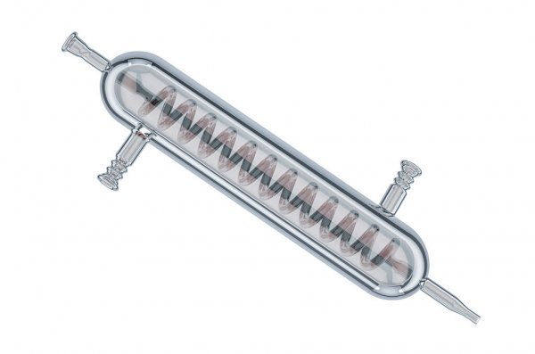
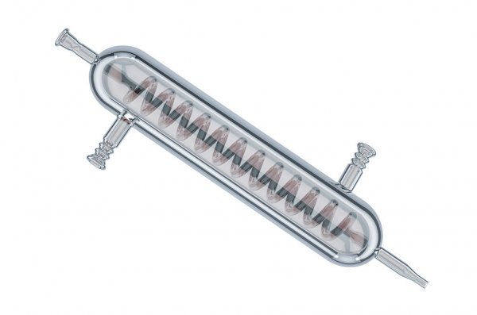

Klasifikasi Materi dan Perubahannya

Pemisahan campuran
Pertanyaan
- Jawablah pertanyaan berikut ini!
- Pertanyaan ini terdiri dari 4 soal
- Setiap pertanyaan memiliki data yang disajikan
- Anda diminta memilih jawaban yang benar diantara pilihan jawaban
- Jika jawaban anda benar, maka akan tampil pembahasan dan keterangan jawaban benar
- Jika jawaban anda salah, maka akan tampil pembahasan dan keterangan jawaban salah
- Jika ingin mengulang menjawab pertanyaan, silahkan tekan tombol 'Ulang'
- Jika ingin melanjutkan menjawab pertanyaan, silahkan tekan tombol 'Selanjutnya' pada nomor soal
- Jika ingin kembali ke pertanyaan sebelumnya, silahkan tekan tombol 'Sebelumnya' pada nomor soal
- Perhatikan gambar di bawah ini!


(Larutan garam) (Larutan kopi) (Larutan teh) (Larutan tanah)
Berdasarkan gambar di atas, campuran yang dapat dipisahkan menggunakan metode filtrasi diantaranya adalah ...
- Larutan garam dan larutan kopi
- Larutan kopi dan larutan teh
- Larutan tanah dan larutan kopi
- Larutan teh dan larutan garam
Pembahasan:
Campuran yang dapat dipisahkan dengan menggunakan metode filtrasi adalah larutan tanah dan larutan kopi karena campuran tersebut memiliki endapan.
Pembahasan:
Silahkan tekan tombol ulang & pilih kembali jawaban yang benar.
- Perhatikan langkah - langkah pembuatan santan kelapa berikut ini!
- Kupas kulit buah kelapa sampai bersih dan sisakan daging kelapa.
- Parutlah daging kelapa yang sebelumnya telah dibersihkan.
- Tempatkan daging kelapa yang telah diparut ke dalam wadah lalu tambahkan sedikit air.
- Tempatkan daging kelapa yang telah bercampur dengan air ke dalam saringan.
- Remas-remas daging kelapa sampai keluar santan kelapa.
Berdasarkan langkah-langkah pembuatan santan kelapa di atas, langkah yang menunjukkan pemisahan campuran metode filtrasi adalah ...
- Mengupas buah kelapa
- Memarut daging kelapa
- Menyaring daging kelapa
- Meremas daging kelapa
Pembahasan:
Berdasarkan langkah-langkah pembuatan santan kelapa di atas, langkah yang menunjukkan pemisahan campuran metode filtrasi adalah menyaring daging kelapa.
Petunjuk:
Silahkan tekan tombol ulang & pilih kembali jawaban yang benar.
- Di bawah ini yang menjadi faktor yang mempengaruhi pemisahan campuran metode filtrasi adalah ...
(silahkan pilih 2 pilihan)
Pembahasan:
Faktor yang mempengaruhi pemisahan campuran metode filtrasi adalah debit air dan diameter rongga penyaring.
Pembahasan:
Faktor yang mempengaruhi pemisahan campuran metode filtrasi ada tiga faktor, dua diantaranya ada dalam data di atas.
- Perhatikan gambar di bawah ini!

 


(Corong kaca) (Labu Erlenmeyer) (Kondensor) (Kaca arloji)
Pada gambar di atas, peralatan yang dapat digunakan dalam pemisahan campuran metode filtrasi diantaranya adalah ...
- Corong kaca dan kondensor
- Labu erlenmeyer dan corong kaca
- Kondensor dan kaca arloji
- Kaca arloji dan labu erlenmeyer
Pembahasan:
Alat yang dapat digunakan dalam pemisahan campuran metode filtrasi adalah labu erlenmeyer dan corong kaca.
Pembahasan:
Silahkan tekan tombol ulang & pilih kembali jawaban yang benar.